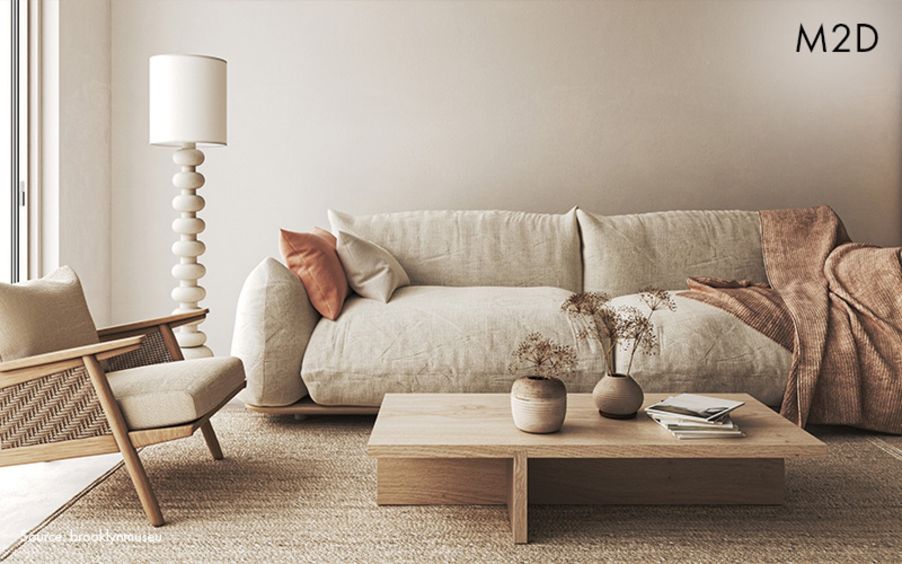
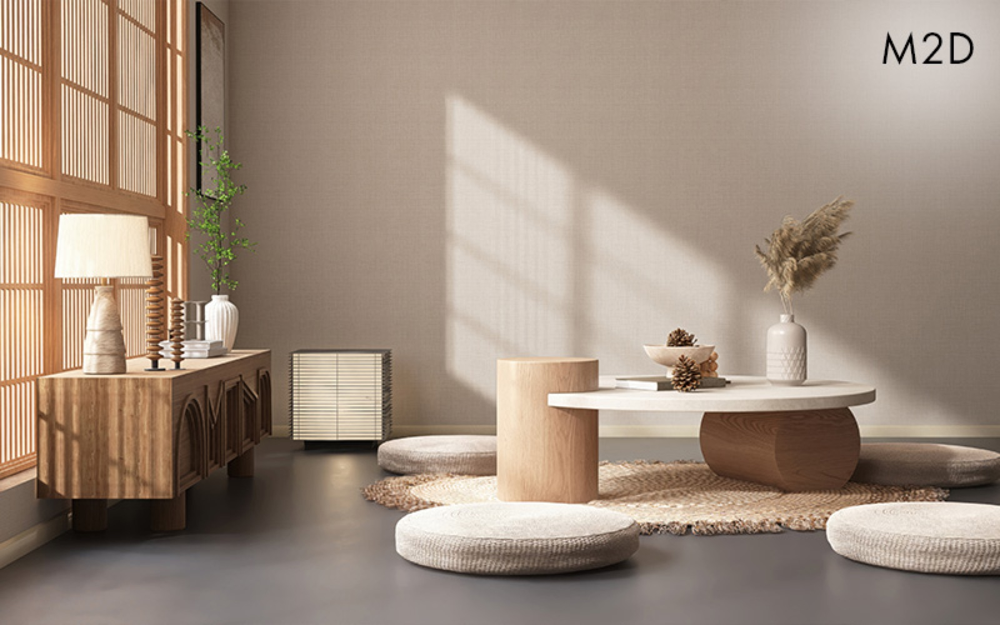

Part 1: Introduction

Amidst the hustle and bustle of the Singaporean way of life, many homeowners are looking to turn their home into a calm, purposeful sanctuary that provides refuge from their busy schedules. This is why minimalist home designs have become highly sought after, offering spaces that promote tranquillity, rest, and intentionality. Rooted in the philosophy of “less is more,” this design approach eliminates clutter and focuses on what truly matters—a sentiment echoed by design legends and philosophers alike.
Among the most celebrated minimalist styles today are Japandi and Scandinavian designs, especially in urban settings where space is at a premium. While the two are distinct in origin, both styles prioritise clean lines, natural materials, and practical living, making them ideal for modern homes seeking simplicity and elegance.
Scandinavian interior style offers light-filled, welcoming spaces rooted in comfort and functionality. In contrast, the Japandi aesthetic brings a quieter, meditative quality that blends Japanese minimalism with Nordic warmth. Together, Japandi and Scandinavian designs have become go-to inspirations for those embracing intentional interiors.
In this article, we will explore how both Japandi and Scandinavian designs interpret the core elements of form, function, and flow in their own unique ways, and how they can transform everyday spaces into peaceful, purposeful sanctuaries.
Part 2: Design Philosophy at a Glance

2.1. How Is Minimalist Interior Design Defined in Modern Days?
1. Core Philosophy:
At its core, minimalist interior design is a celebration of simplicity, clarity, and intentional living. It embraces the belief that "less is more," urging homeowners to strip away the unnecessary in favour of what truly matters. This approach prioritises quality over quantity, encouraging spaces that feel open, balanced, and meaningful. Rather than focusing solely on aesthetics, minimalism seeks to create homes that support mindful living and foster a sense of peace.
2. Modern Relevance:
In an age of digital distractions, noise, and visual clutter, minimalist home design has become more than a trend; it is also a lifestyle choice. For residents living in urban environments where space is often limited, minimalist interiors can help make the most of it. They allow for easier organisation, quicker cleaning, and by extension, mental clarity. Beyond functionality, these spaces also support emotional wellbeing by offering calm, restorative environments at the end of a busy day.
3. Design Principles:
The aesthetic language of minimalism is rooted in clean lines, neutral colour palettes, and open, breathable layouts. Natural materials in design, such as wood, stone, and linen, help soften the space and connect it to nature. Functional minimalist furniture is prized for its aesthetics and functionality. Each item has a clear role, reducing excess and visual noise.
Influences from Japandi and Scandinavian design have played a major role in shaping modern minimalist spaces. Both styles offer practical interpretations of minimalism that suit urban lifestyles, including interior design for condos and HDBs. At their core, both Japandi and Scandinavian design show that a home can be both functional and beautiful, supporting clarity, comfort, and intentional living spaces without compromising on personality.
2.2. How Japandi and Scandinavian Designs Inspire a Minimalist Lifestyle
As we grapple with an increasingly frenetic pace of life, minimalist interior design offers more than visual simplicity; it also provides a much-needed sense of clarity and calm. More homeowners in Singapore are turning to styles that prioritise breathing space, thoughtful layouts, and emotional well-being. This is a major factor behind the rise in popularity of Japandi and Scandinavian designs, both of which embody the values of intentional living spaces and meaningful design.
Rather than embracing minimalism in its most extreme form, such as bare walls and stark furnishings, these styles promote warmth, texture, and purpose. They embody the core principle that simplicity does not have to come at the cost of comfort or personality. Scandinavian home interior design, with its focus on hygge and soft, light-filled spaces, creates welcoming environments perfect for families, small HDB flats, or compact condo units. In contrast, the Japandi aesthetic draws from Japanese wabi-sabi principles to create serene, grounded homes where every object has a clear function and place.
Ultimately, both styles share a common emphasis on functional minimalist furniture, natural textures, and harmonious layouts. Their appeal lies in their ability to combine form and function effortlessly, providing balance in both design and daily living. The influence of Japandi and Scandinavian designs are especially relevant in Singapore, where efficient use of space and a calming atmosphere are prioritised.
2.3. What Is Scandinavian Design?
The Scandinavian interior style originated in the Nordic region during the early 20th century and rose to prominence after the 1930 Stockholm Exhibition. Its aim was to create accessible, functional, and beautiful interiors that reflected a democratic approach to design, where style and quality were not limited to the wealthy. This philosophy resonated globally and continues to influence minimalist interior design trends today.
Scandinavian design is built on light, simplicity, and comfort. It embraces the natural world, often incorporating natural materials in design such as pale woods, wool, linen, and leather. These elements work together to create soft, calming environments that reflect a connection to nature, something that appeals strongly to Singapore homeowners looking to incorporate a touch of warmth and tranquillity into their condo or HDB interior design.
A defining feature is the concept of hygge, a Danish term for a feeling of cosiness and contentment. This is achieved through clean lines, neutral tones, layered textures, and gentle lighting. Layouts are typically open and uncluttered, promoting calming interior layouts that support both relaxation and functionality.
While Japandi and Scandinavian designs share similar values, Scandinavian interiors lean slightly more casual and brighter in tone. There is a lightness and softness in Scandinavian homes that makes them feel particularly liveable, especially for families or young professionals.
Whether you are looking for interior design services for a condo or an HDB flat, Scandinavian design offers an ideal blend of form and practicality—ideal for crafting a soothing yet efficient home interior design in urban Singapore.
2.4. What Is Japandi Design?
Japandi design is a harmonious blend of Japanese wabi-sabi aesthetics and to some extent, Scandinavian elements. It values simplicity, craftsmanship, and natural imperfection—resulting in spaces that feel intentional, serene, and deeply personal. The term "Japandi" comes from combining "Japanese" and "Scandi," reflecting the stylistic and philosophical fusion between these two cultures.
This style gained international attention in the 2010s, but its roots go back much further. The mutual admiration between Japanese and Scandinavian designers began in the mid-20th century, as both cultures recognised shared values in minimalist home design, quality craftsmanship, and the use of natural materials. In Singapore, where compact urban living is common, Japandi has quickly become popular amongst homeowners looking for clean yet calming spaces.
Japandi interiors feature muted, earthy tones like olive green, charcoal, taupe, and terracotta. Unlike the brighter palettes found in typical Scandinavian settings, Japandi interiors feel more grounded and intimate. Furniture tends to be low-profile with clean, sleek lines. Materials such as bamboo, linen, and lightly stained woods are often used to emphasise warmth and texture.
More than just visual appeal, Japandi and Scandinavian design both prioritise mindfulness and utility. Japandi design, in particular, values purpose over decoration. Each element is chosen with care, contributing to intentional living spaces and calming interior layouts.
2.5. What Are the Differences Between Japandi and Scandinavian Designs?
Though they share minimalist roots, Japandi and Scandinavian designs differ in how they interpret space, mood, and function. Understanding these distinctions can help you decide which style suits your lifestyle, or how to blend elements from both.
1. Mood
Japandi interiors feel calm, grounded, and meditative. They invite introspection and balance. Scandinavian spaces, on the other hand, are bright, casual, and comforting, characteristics that are ideal for lively homes.
2. Palette
Japandi leans towards warm neutrals and rich earthy tones like clay, forest green, and charcoal. Scandinavian interiors favour cooler tones, such as light greys, whites, and pastel accents, that reflect natural light.
3. Form
Japandi uses clean, straight lines and low-profile furniture to evoke simplicity. Scandinavian furniture incorporates soft curves, slender legs, and airy silhouettes.
4. Function
Japandi focuses on “less but better,” favouring items that are both purposeful and emotionally resonant. Scandinavian style leans more practical, with multi-functional furniture and user-friendly layouts.
5. Flow
Japandi layouts are zoned and asymmetrical, promoting deliberate movement. Scandinavian spaces encourage openness and fluidity, maximising light and comfort.
Here is a table summarising the key differences between Japandi and Scandinavian designs:
Aspect | Japandi | Scandinavian |
Mood | Calm, grounded, meditative | CoSy, bright, casual |
Palatte | Warm neutrals with earthy accents | Light neutrals, pastels |
Form | Sleek, straight lines, low-profile furniture | Soft curves, light woods |
Function | Purposeful, minimalist, less-is-best | Family-friendly, multi-functional |
Flow | Zoned, asymmetrical, intentional | Open, symmetrical, airy |
In more compact homes, combining Japandi and Scandinavian designs offers a balanced way to enjoy both harmony and practicality, ideal for those seeking minimalist interior design without sacrificing warmth or function.
Part 3: Japandi vs. Scandinavian Design: Form, Function, and Flow

3.1. What Does “Form” Mean?
Shapes, Lines, and Visual Aesthetics
When we speak of “form” in minimalist interior design, we refer to the shapes, lines, and overall visual impact of furniture and decor. It is about how each piece looks, and how it contributes to the atmosphere of the room.
1. Scandinavian FormThe Scandinavian interior style embraces clean, fluid lines that promote openness. Furniture tends to feature soft curves and tapered legs, creating a sense of lightness. Light-toned wood and natural textures are commonly used to enhance visual clarity without feeling cold. The aim is to build a space that is both bright and inviting, especially useful in compact flats or HDB interior design where natural light may be limited.
2. Japandi FormJapandi form is more grounded. Think lower-profile furniture with stronger, sleeker lines. There is a deliberate use of balance and asymmetry that reflects the wabi-sabi principle of finding beauty in imperfection.
While both Japandi and Scandinavian designs emphasise simplicity, Japandi feels more rooted and serene, whereas Scandinavian form creates a lighter, airier look. Combining both can deliver the best of both worlds in terms of elegance and visual synergy
3.2. What Does “Function” Mean?
Purposeful Design and Daily Living
In minimalist home design, “function” is about how well a space supports your daily routines. It is not just about how a room looks, but how it works—efficient, practical, and purposeful. Good form should always follow function, especially in homes with limited space, like HDB flats and condominiums.
1. Scandinavian ApproachThe Scandinavian interior style is deeply rooted in practical living. Furniture pieces are often multi-functional, such as sofas with hidden storage, dining tables that extend, and modular shelves. Scandinavian design also favours items that are easy to maintain and durable, supporting busy lifestyles.
2. Japandi ApproachJapandi takes a more mindful view of function. In line with the wabi-sabi principle, Japandi values fewer but better items. Every piece should either serve a clear purpose or bring emotional value. You will often find functional minimalist furniture that supports quiet rituals, such as tea tables, floor cushions, or calm reading nooks. It is about building intentional living spaces that promote peace and order.
Both Japandi and Scandinavian designs prioritise function, but Japandi leans towards meaningful minimalism, while Scandinavian design favours everyday usability. Together, they show that function can be both beautiful and thoughtful.
3.3. What Does “Flow” Mean?
Layout and Spatial Planning
In minimalist interior design, flow refers to how movement, light, and energy travel through a space. It influences not only how rooms connect, but also how you feel as you move through your home. Here are some ways that Japandi and Scandinavian designs differ in terms of flow.
1. Scandinavian LayoutsScandinavian interiors favour open plans that allow natural light to move freely. There is an emphasis on symmetrical arrangements, visual balance, and spaciousness, which are great for lively households and small urban homes.
2. Japandi LayoutsJapandi layouts are more deliberate. Inspired by Japanese traditions, they often include defined zones for different activities. These layouts encourage homeowners to slow down and take on a more reflective attitude.
While both Japandi and Scandinavian design focus on simplicity, their approach to spatial flow reveals subtle but meaningful differences.
3.4. Which Layout Style Suits Your Lifestyle?
Choosing between Japandi and Scandinavian designs often depends on your daily routines and personal preferences. Both offer calming interior layouts, but they cater to different lifestyles.
Scandinavian interiors are ideal for families or those who enjoy casual entertaining. Its open, airy spaces and multi-functional furniture work well in small urban homes like Singapore condos and HDB flats, making efficient use of limited space whilst keeping things bright and welcoming.
In contrast, Japandi suits those who seek a tranquil retreat from the city’s hustle. Its emphasis on calm, order, and minimalist beauty creates serene, grounded spaces where every item has meaning.
FAQs
1. Are Japandi and Scandinavian furniture pieces interchangeable?
Not always. Scandinavian furniture tends to be lighter, sleeker, and more casual. Japandi pieces lean toward low-profile, earthy tones with clean but weightier lines. Blending both Japandi and Scandinavian designs into your furniture requires thoughtful curation.
2. How do both styles approach functionality?
Japandi and Scandinavian designs both prioritise functionality but in different ways. Scandinavian design emphasises practical living, with furniture that often serves multiple purposes to maximise space. Japandi, on the other hand, values purpose over quantity, focusing on fewer but more meaningful pieces that enhance daily living and create intentional living spaces.
3. Which style is easier to maintain?
Japandi and Scandinavian designs differ in maintenance needs. Scandinavian interiors may require more upkeep to maintain their pristine, bright aesthetic. In contrast, Japandi’s use of natural textures and earthy tones tends to hide minor imperfections better, reflecting its embrace of imperfection through the wabi-sabi philosophy.
Understanding the nuances between Japandi and Scandinavian designs can help homeowners create intentional living spaces that reflect their personal values and lifestyle needs. Whether you are drawn to the cosy, functional charm of Scandinavian interior style or the serene, mindful elegance of the Japandi aesthetic, both offer pathways to achieving a harmonious and clutter-free home.
Here at M2D Design and Consultancy, we specialise in conceptualising and minimalist home design solutions tailored to Singapore's unique living environments. Our expertise in various interior styles, including Japandi and Scandinavian designs, ensures that every project, be it interior design for condos or HDBs, accurately embodies the principles of each style and the vision you have in mind.
For more information about our services, please contact us today.